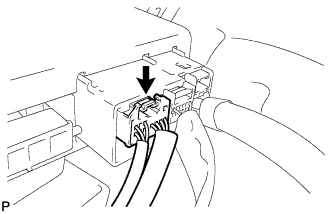
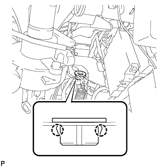
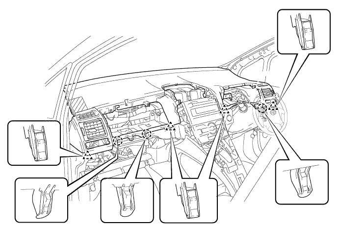
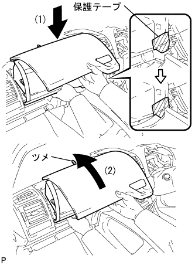
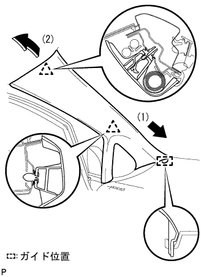
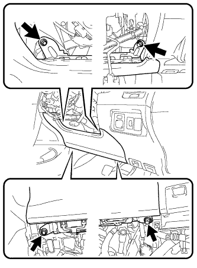
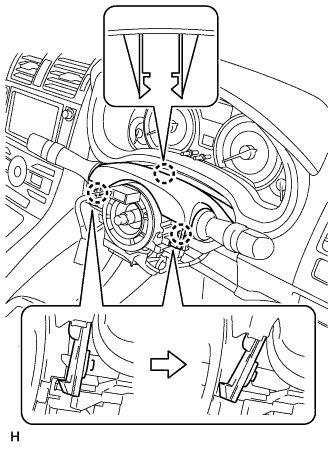
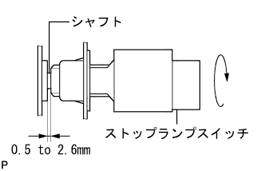

Steering Column Assembly Installation |
| 1. Install Steering Column Assembly w/ Steering Intermediate Shaft Assembly NO.2 |
 |
Install the steering column assembly w/ steering intermediate shaft assembly No.2 with the 2 bolts and nuts.
 |
Connect the connector to the power steering computer assembly.
 |
Connect the connector to the power steering computer assembly.
Attach the wire harness clamp to the power steering computer assembly.
Connect each connector, and attach the wire harness clamps to the steering column assembly bracket.
| 2. Install Stop Light Switch Mounting Adjuster |
 |
Engage the 2 claws and install the stop light mounting adjuster.
| 3. Temporarily Tighten Stop Light Switch Assembly |
 |
Turn the stop light switch assembly clockwise to temporarily install it to the brake pedal support.
| 4. Connect Steering Intermediate Shaft Assembly NO.2 |
 |
Align the matchmarks and connect steering intermediate shaft assembly No.2 to the steering intermediate shaft.
 |
Install the bolt.
| 5. Install Column Hole Cover Silencer Sheet |
 |
Install the column hole cover silencer sheet with the 2 clips.
Put the floor carpet back in place.
| 6. Install Instrument Panel UPR w/ Instrument Panel Passenger Airbag Assembly |
 |
Apply protective tape to the positions shown in the illustration.
Engage the 5 claws.

Engage the 4 clips and 3 claws.

Connect the connectors.
Install the 2 instrument panel passenger airbag assembly installation bolts <A>.
Install the instrument panel UPR w/ instrument panel passenger airbag assembly with the 2 screws <B>.

Remove the protective tape that was applied.
| 7. Connect Instrument Panel Passenger Airbag Assembly Connector |
 |
Connect the instrument panel passenger airbag assembly connector.
| 8. Install Instrument Panel Box Door Sub-assembly NO.1 |
 |
Insert instrument panel box door No.1 in the direction of arrow (1).
Insert instrument panel box door No.1 in the direction of arrow (2) so that the upper claws enter the inside of the instrument panel UPR.
 |
Engage the 3 clips and 3 claws.
 |
Install instrument panel box door No.1 with the 2 screws <B>.
Remove the protective tape that was applied.
| 9. Install Instrument Cluster Finish End Panel |
 |
Install the instrument cluster finish panel end.
| 10. Install Glove Compartment Door Assembly |
 |
Engage the 2 claws of the glove compartment door assembly hinge in the vehicle horizontal direction.
 |
Slightly deform parts A and B shown in the illustration in the direction of the arrows and engage the 2 stoppers.
Engage the claw, connect the glove compartment door stopper and install the glove compartment door assembly.
| 11. Install Instrument Panel Finish Panel LWR CTR |
 |
Engage the 6 clips and 4 claws.
 |
Install the instrument panel finish panel LWR CTR with the 2 screws <C>.
| 12. Install Position Indicator Housing Assembly |
Connect the connector.
 |
Engage the 7 claws and install the position indicator housing assembly.
| 13. Install Console Box Cover RR |
| 14. Install Shift Lever Knob |
 |
Turn the shift lever knob in the direction of the arrow shown in the illustration to install it.
| 15. Install Front Pillar Garnish RH |
 |
Remove the protective cover.
Install a new front pillar garnish clip to the garnish.
 |
Insert the guide at the front end.
Engage the front pillar garnish clip and clip, and install the front pillar garnish RH.
| 16. Install Front Pillar Garnish Corner Piece RH |
 |
Insert the 2 guides B.
Engage the 5 claws and 2 guides A, and install the front pillar garnish corner piece RH.
Remove the protective tape that was applied.
| 17. Install Front Pillar Garnish LH |
 |
Remove the protective cover.
Install a new front pillar garnish clip to the garnish.
 |
Insert the guide at the front end.
Engage the front pillar garnish clip and clip, and install the front pillar garnish LH.
| 18. Install Front Pillar Garnish Corner Piece LH |
| 19. Install Instrument Panel Register Assembly CTR |
 |
Connect the connector.
 |
Engage the 2 clips, 5 claws and 3 guides, and install the instrument panel register assembly CTR.
| 20. Install Instrument Panel Finish Panel End RH |
 |
Engage the 4 clips and install the instrument panel finish panel end RH.
| 21. Install Instrument Panel Finish Panel End LH |
 |
Engage the 4 clips and install the instrument panel finish panel end LH.
| 22. Install Combination Meter Assembly |
 |
Connect the connectors and temporarily install the combination meter assembly.
 |
Install the combination meter assembly with the 4 screws.
| 23. Install Instrument Cluster Finish Panel Assembly |
 |
Engage the 2 claws and 9 clips, and install the instrument cluster finish panel.
 |
Remove the protective tape that was applied.
| 24. Install Turn Signal Switch Assembly w/ Spiral Cable |
 |
Engage the claws and install the turn signal switch assembly w/ spiral cable to the steering column assembly.
Connect each connector to the turn signal switch assembly w/ spiral cable.
| 25. Install Instrument Panel Airbag Assembly LWR NO.1 |
 |
Connect the connector to the instrument lower airbag No.1.
 |
Install the instrument lower airbag No.1 with the 6 claws and 2 guides.
 |
Install the instrument lower airbag No.1 with the 4 bolts.
| 26. Remove Instrument Panel Under Cover Sub-assembly NO.1 |
 |
Engage the 2 screws and claws, and install instrument panel under cover NO.1.
| 27. Install Steering Column Cover |
 |
Engage the 2 claws and pins, and install the steering column cover (upper side).
 |
Engage the 2 claws and install the steering column cover (lower side).
 |
Engage the 4 claws.
 |
Engage the claws.
| 28. Check Front Wheels Straight-ahead Position |
| 29. Center Spiral Cable |
Check that the IG is OFF.
Check that the battery negative terminal is disconnected.
 |
Slowly turn the spiral cable counterclockwise until it locks.
 |
From the locked position, turn the spiral cable back 2.5 turns clockwise and align the matchmarks shown in the illustration.
| 30. Install Steering Wheel Assembly |
 |
Align the matchmarks and install the steering wheel assembly to the steering column assembly.
Install the nut.
Connect each connector to the spiral cable.
| 31. Install Horn Button Assembly |
 |
Connect the horn connector to the horn button assembly.
Connect the airbag connector to the horn button assembly and lock it securely.
 |
Using a torx socket wrench (T30), install the horn button assembly to the steering wheel assembly with the 2 torx bolts.
| 32. Install Steering Wheel Cover Lower NO.3 |
 |
Engage the claws and install the steering wheel cover lower No.3.
| 33. Install Steering Wheel Cover Lower NO.2 |
 |
Engage the claws and install the steering wheel cover lower No.2.
| 34. Check Steering Wheel Assembly Center Position |
| 35. Install Battery Negative Terminal |
| 36. Inspect and Adjust Brake Pedal Height |
 |
Inspect brake pedal height
Turn back the carpet.
Turn back the dash silencer from the slit in the dash silencer.
Measure the shortest distance from the brake pedal pad surface to the floor panel.
Adjust brake pedal height
Disconnect the connector from the stop light switch.
Loosen the clevis lock nut and turn the push rod to adjust the pedal height.
Tighten the clevis lock nut.
 |
Insert the stop light switch into the adjuster until the stop light switch contacts the brake.
 |
Turn the stop light switch approximately 1/4 turn clockwise.
Connect the connector to the stop light switch.
Check the shaft protrusion.
Check that the stop lights do not illuminate when the brake pedal is not depressed.
| 37. Inspect Airbag Warning Light |
)| 38. Torque Sensor 0 Point Calibration and Rotation Angle Sensor Output Calibration |
)| 39. Setting Procedure When Disconnecting/Reconnecting Battery Terminal |
)